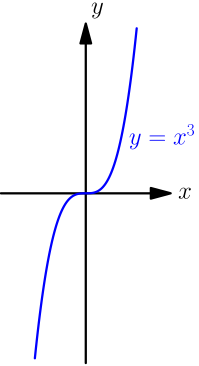

Power Rule, Part 1¶
In the past, we have seen that $$ \frac{d}{dx} x^2 = 2x. $$ Let's see what happens with other numbers instead of $2$.
Derivative of $x$¶
By using the definition of derivative with $f(x)=x$, we get $$ \begin{align} f'(x) &= \lim_{h \to 0} \frac{(x+h)-x}{h} \\ &= \lim_{h \to 0} \frac{h}{h} = \lim_{h \to 0} 1 = 1. \end{align} $$
$$ \frac{d}{dx} x = 1 $$
This means that any tangent line of the line $y=x$ has slope $1$. That makes sense, because any tangent line of $y=x$ is just $y=x$ itself, and the slope of $y=x$ is $1$.
Interpreting this result with speed, it says that if your walked distance at $t$ seconds is $t$ metres, then you move 1 metre per second. That makes sense too.
As one more way to "check" this result, with Leibniz's notation we get $$ \frac{d}{dx} x = \frac{dx}{dx}, $$ which looks like it really should be $1$, and indeed it is $1$.
Derivative of Constant¶
Let $a$ be any number, and let $f(x) = a$. With the definition of derivative, we get $$ \begin{align} f'(x) &= \lim_{h \to 0} \frac{f(x+h)-f(x)}{h} \\ &= \lim_{h \to 0} \frac{a-a}{h} \\ &= \lim_{h \to 0} 0 = 0. \end{align} $$
If $a$ is any number, then $$ \frac{d}{dx} a = 0. $$
This means that any tangent line of $y=a$ has slope $0$, and again, that makes sense; $y=a$ is a horizontal line with slope $0$, and any tangent line is simply $y=a$ itself.
Interpreting this result with speed, it says that if your walked distance at any time is $a$, regardless of what time it is, then your walking speed is zero, simply because you stay at $a$ and you aren't moving at all.
In the context of derivatives, numbers that don't depend on $x$ are called constant. Here $a$ is a constant.
Derivative of $x^3$¶
To calculate the derivative of $x^3$, recall that for all numbers $a$ and $b$, we have $$ (a+b)^3 = a^3 + 3a^2b + 3ab^2 + b^3. $$ You can verify this easily by calculating $$ (a+b)^3 = (a+b)^2(a+b) = (a+b)^2 a + (a+b)^2 b, $$ and then using the formula for $(a+b)^2$.
By using the definition of derivative with $f(x)=x^3$, we get $$ \begin{align} \frac{d}{dx} x^3 &= \lim_{h \to 0} \frac{(a+h)^3-a^3}{h} \\ &= \lim_{h \to 0} \frac{a^3+3a^2h+3ah^2+h^3-a^3}{h} \\ &= \lim_{h \to 0} \frac{3a^2h+3ah^2+h^3}{h} \\ &= \lim_{h \to 0} (3a^2+3ah+h^2) \\ &= \lim_{h \to 0} 3a^2 + \lim_{h \to 0} 3ah + \lim_{h \to 0} h^2 \\ &= 3a^2+0+0. \end{align} $$
$$\frac{d}{dx} x^3 = 3x^2$$
The graph $y=x^3$ looks like this:

The derivative $3x^2$ is never negative because $x^2$ can't be negative, so no tangent line of this graph has negative slope; that makes sense if you look at the above graph. Also, the only tangent line with slope $0$ is the one touching the graph at $(0,0)$, and that corresponds with how $3x^2 = 0$ if and only if $x=0$.
Derivative of $x^7$¶
For any numbers $a$ and $b$, by adding and subtracting the same things, we get $$ \begin{align} a^7-b^7 = a^7 &{}+ a^6b + a^5b^2 + a^4b^3 + a^3b^4 + a^2b^5 + ab^6 \\ &{}- a^6b - a^5b^2 - a^4b^3 - a^3b^4 - a^2b^5 - ab^6 - b^7. \end{align} $$ Everything on the top row contains $a$ and everything on the bottom row contains $b$, so by factoring, we get $$ \begin{align} a^7-b^7 = a(a^6 &{}+ a^5b + a^4b^2 + a^3b^3 + a^2b^4 + ab^5 + b^6) \\ &{}- b(a^6 + a^5b + a^4b^2 + a^3b^3 + a^2b^4 + ab^5 + b^6). \end{align} $$ The parenthesized parts are now the same, so we have $$ a^7-b^7 = (a-b)(a^6 + a^5b + a^4b^2 + a^3b^3 + a^2b^4 + ab^5 + b^6). $$ Dividing both sides by $a-b$ gives $$ \frac{a^7-b^7}{a-b} = a^6 + a^5b + a^4b^2 + a^3b^3 + a^2b^4 + ab^5 + b^6. $$ By using this with $a=x+h$ and $b=x$, we get $$ \begin{align} \frac{(x+h)^7-x^7}{(x+h)-x} &=(x+h)^6 + (x+h)^5x + (x+h)^4x^2 \\ &\qquad + (x+h)^3x^3 + (x+h)^2x^4 + (x+h)x^5 + x^6. \end{align} $$ Here $(x+h)-x = h$, so this is same as what we have in the definition of derivative, and we get $$ \begin{align} \frac{d}{dx} x^7 &= \lim_{h \to 0} \frac{(x+h)^7-x^7}{h} \\ &= \lim_{h \to 0} \Bigl( (x+h)^6 + (x+h)^5x + (x+h)^4x^2 \\ &\qquad\qquad + (x+h)^3x^3 + (x+h)^2x^4 + (x+h)x^5 + x^6 \Bigr) \\ &= (x+0)^6 + (x+0)^5x + (x+0)^4x^2 \\ &\qquad + (x+0)^3x^3 + (x+0)^2x^4 + (x+0)x^5 + x^6 \\ &= x^6+x^6+x^6+x^6+x^6+x^6+x^6 \\ &= 7x^6. \end{align} $$ This works the same for any other positive integer instead of $7$.
For any positive integer $n$, we have $\frac{d}{dx} x^n = nx^{n-1}$. This is called the power rule.
Examples that we have seen earlier:
- With $n=3$, we get $\frac{d}{dx} x^3 = 3x^2$.
- With $n=2$, we get $\frac{d}{dx} x^2 = 2x^1 = 2x$.
- With $n=1$, we get $\frac{d}{dx} x^1 = 1x^0$, which is same as $\frac{d}{dx} x = 1$.
- With $n=0$, we get $\frac{d}{dx} x^0 = 0x^{-1}$, which is same as $\frac{d}{dx} 1 = 0$.
Let's see whether this formula works for other values of $n$.
Derivative of $\frac 1 x$¶
From the definition of derivative, we get $$ \begin{align} \frac{d}{dx} \frac 1 x &= \lim_{h \to 0} \frac{ \frac{1}{x+h} - \frac 1 x }{h} \\ &= \lim_{h \to 0} \frac{ \frac{x}{(x+h)x} - \frac{x+h}{(x+h)x} }{h} \\ &= \lim_{h \to 0} \frac{ ~~ \frac{x-(x+h)}{(x+h)x} ~~ }{h} \\ &= \lim_{h \to 0} \frac{x-x-h}{(x+h)xh} \\ &= \lim_{h \to 0} \frac{-h}{(x+h)xh} \\ &= \lim_{h \to 0} \frac{-1}{(x+h)x} \\ &= \frac{-1}{(x+0)x} = \frac{-1}{x^2}. \end{align} $$ By noticing that $\frac 1 x = x^{-1}$ and $\frac{-1}{x^2} = (-1)x^{-2}$, we get $$ \frac{d}{dx} x^{-1} = (-1)x^{-2}. $$
The power rule works with $n=-1$.
Derivative of $\sqrt x$¶
From the definition of derivative, we get $$ \begin{align} \frac{d}{dx} \sqrt{x} &= \lim_{h \to 0} \frac{ \sqrt{x+h} - \sqrt{x} }{h} \\ &= \lim_{h \to 0} \frac{ (\sqrt{x+h} - \sqrt{x})(\sqrt{x+h} + \sqrt{x}) }{h(\sqrt{x+h} + \sqrt{x})} \\ &= \lim_{h \to 0} \frac{ \left(\sqrt{x+h}\right)^2 - \left(\sqrt{x}\right)^2 }{h(\sqrt{x+h} + \sqrt{x})} \\ &= \lim_{h \to 0} \frac{ (x+h)-x }{h(\sqrt{x+h} + \sqrt{x})} \\ &= \lim_{h \to 0} \frac{h}{h(\sqrt{x+h} + \sqrt{x})} \\ &= \lim_{h \to 0} \frac{1}{\sqrt{x+h} + \sqrt{x}} \\ &= \frac{1}{\sqrt{x+0} + \sqrt{x}} = \frac{1}{2\sqrt{x}}. \end{align} $$ By noticing that $\sqrt{x} = x^{1/2}$ and $\frac{1}{2\sqrt{x}} = \frac 1 2 x^{-1/2}$, we get $$ \frac{d}{dx} x^{1/2} = \frac 1 2 x^{-1/2}, $$ which means that the power rule also works with $n=\frac 1 2$. By combining this derivation with what we did for $x^7$, we can also get this to work with, $n=\frac 1 3$, $n=\frac 1 4$, $n=\frac 1 5$ and so on.
The power rule works with $n=\frac 1 2$, $n=\frac 1 3$, $n=\frac 1 4$ and so on.
Summary¶
The power rule $\frac{d}{dx} x^n = nx^{n-1}$ works in the following cases:
- $n=-1$, $n=0$, $n=1$, $n=2$, $n=3$, $\dots$
- $n=\frac 1 2$, $n=\frac 1 3$, $n=\frac 1 4$, $n=\frac 1 5$, $n=\frac 1 6$, $\dots$
Does it also work for other values of $n$? We'll come back to this later.
See Also¶
In this awesome video, 3blue1brown presents some of the results on this page in very visual ways. I highly recommend watching the video. While watching, keep in mind that
- 3blue1brown's $dx$ is same as our $h$,
- 3blue1brown's $d(f(x))$ is same as our $f(x+h)-f(x)$,
- it's more convincing to take a limit than to say that something is very small, and
- 3blue1brown's drawings assume that many things are positive when they might not be.
I think it's best to understand 3blue1brown's video and the calculations on this page.